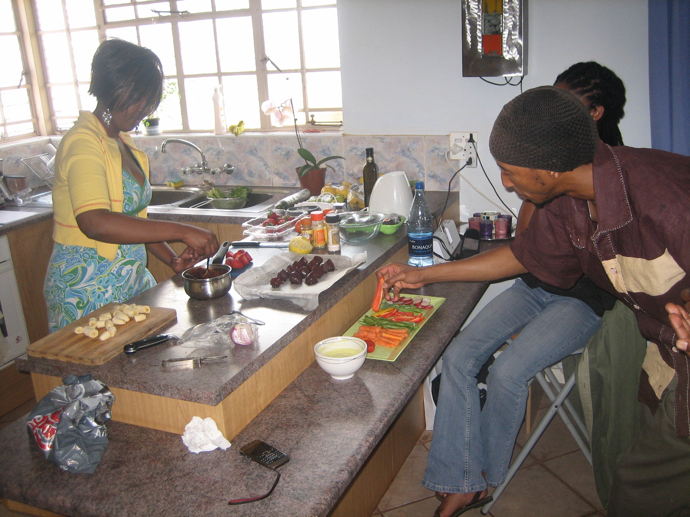
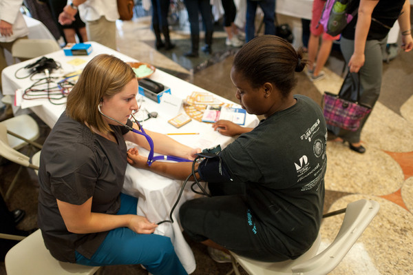

Annual Toy Drive
This year we will participate in the The WGN Morning News Drive-Thru Toy Drive will be celebrating its 11th year; its fourth tied to Jennifer Hudson. You may drop off your toys here in the store and all toys will be sent to WGN-TV is located at 2501 W. Bradley Place, Chicago, IL 60618. Please help us make Christmas brighter for the youth.
January Vegan Workshop
This workshop is for anyone even remotely curious about vegan or raw cuisine. We also welcome those just looking for a few healthy tips to make their food healthier. This is a three day workshop full of fun, new food and excitment. We will have guess cooks share some of their favorite recipes, cooking demonstrations, a raffle and also a booklet for you to take home.
Department of Health Wellness Check up
 We are helping making Chicago healthier by doing more then serving good food. We will be holding a wellness workhop in partnership with the city of Chicago. The City of Chicago focus on Chicagoans Health and Wellness, our goal is to make Chicago “The Healthiest City in the U.S.” The City of Chicago works with community partners, internal departments to promote health, prevent disease, reduce environmental hazards and insure access to health care for all Chicagoans.
5k Walk for Cancer
Derrick is a 32 year old male who is single with one child. He lives around the corner from the restaurant and was raised on soul food. Derrick does not cook and usually eats at a restaurant daily. As an athletic and health conscious individual Derrick enjoys eating foods that are delicious and nutritious.